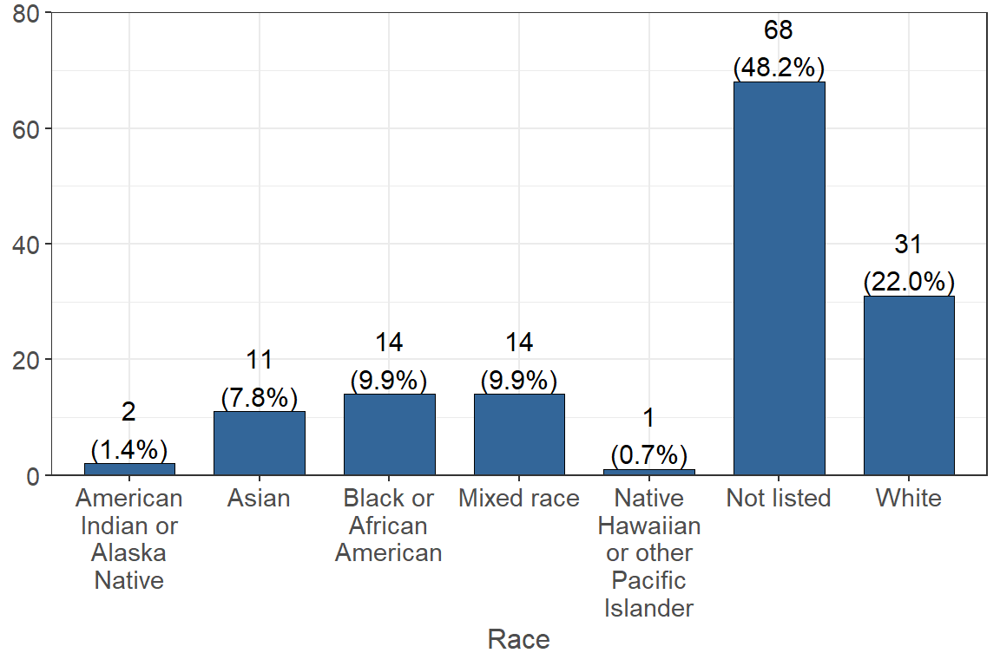
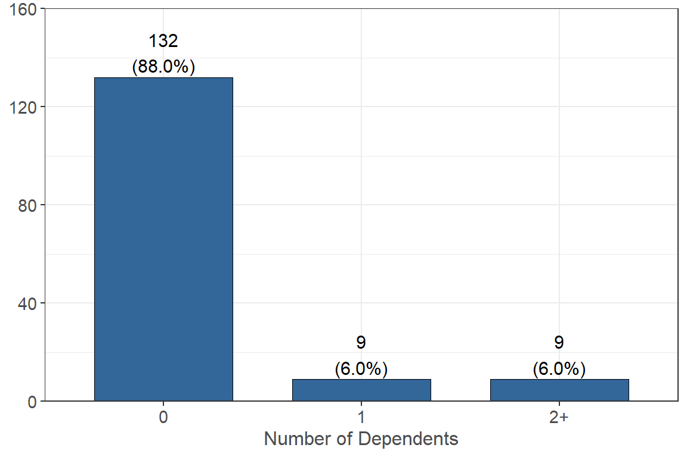
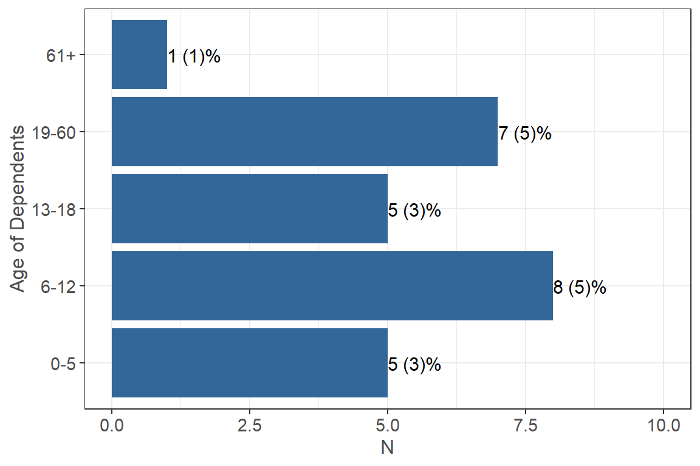

Personal Demographics
Gender ⭐
The US Census lists the following choices for sex: Male Female. Please choose the one that most closely fits your identity.
Of the 150 participants, 70% of the respondents (n = 105) are Female and 30% of the respondents (n = 45) are Male.
What was your sex assigned at birth?
Most respondents, or 70.7%, (n = 106) reported that they were Female at birth and 29.3% of the respondents (n = 44) were Male at birth.
What is your gender identity?
Most respondents, or 69.3 % of the respondents, identify as a Woman (n = 104), 28.7% identify as a Man (n = 43), and lastly 1.3% (n = 2) identify as Gender Queer or Gender-Nonconforming.
Race / Ethnicity ⭐
How do you identify your race?

A majority of the respondents did not list their race (48.2% n = 68). 22.0% (n = 31) of the respondents identified as white, followed by 9.9% (n = 14) of the respondents identified as Black or African American. 9.9% (n = 14) of the respondents identified as Mixed race, and 7.8% (n = 11) identified as Asian. Lastly, 1.4% (n = 2) identified as American Indian or Alaska Native, and 0.7% (n = 1) identified as Native Hawaiian or other Pacific Islander.
How do you identify your ethnicity?
Most respondents, or 74.7% (n = 109), identified as Hispanic or Latino and 25.3% (n = 37) identified as Non-Hispanic or Latino.
Marital Status
What is your marital status?
A large proportion (88.5% n = 131) of the respondents reported that they are single and have never been married. 6.1% (n = 9) reporter they are married, 4.0% (n = 6) reported they are living with a partner, 0.7% (n = 1) reported they are separated, and lastly 0.7% (n = 1) reported they are widowed.
Citizenship
Are you a US citizen?
Most respondents, or 92.6% (n = 137), reported that they are U.S. citizens and 7.4% (n = 11) reported they are not citizens.
If not a U.S. citizen, are you a lawful permanent resident (i.e. have a “green card”)?
Out of the participants that were not a U.S. citizen, 54.5% (n = 6) report they are not a permanent resident and 45.5% (n = 5) report they are a permanent resident.
Dependents
How many dependents receive more than 50% of their financial support from you?

Most participants, or 88.0% (n = 132), reported that they have 0 dependents who receive more than 50% of their financial support from them. 6.0% (n = 9) report that they have 1 dependent and 6.0% (n = 9) report that they have 2 or more dependents.
What is/are the age(s) of your dependent(s)?

About 5% (n = 8) of the total number of respondents say they have dependents that are between 6-12 years old, 5% (n = 7) say they have dependents that are between 19-60 years old, and only 1 person says they have dependents that are over 61 years old.
Header
Are you a first generation student?
The vast majority of respondents (94.7% n = 142) are first generation college students with only 8 (5.3%) not being first generation students.
This work was supported by insert grant information here. Any use of these results in further work must use the following citation:
Center for Healthy Communities, "Website name", June 2020. Retrieved on xx-xxx-xxxx from https://chicocalfresh.github.io/bns-website/index.html